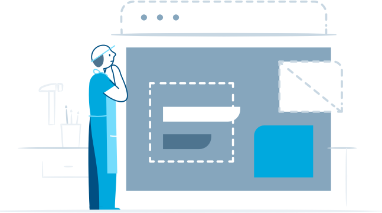
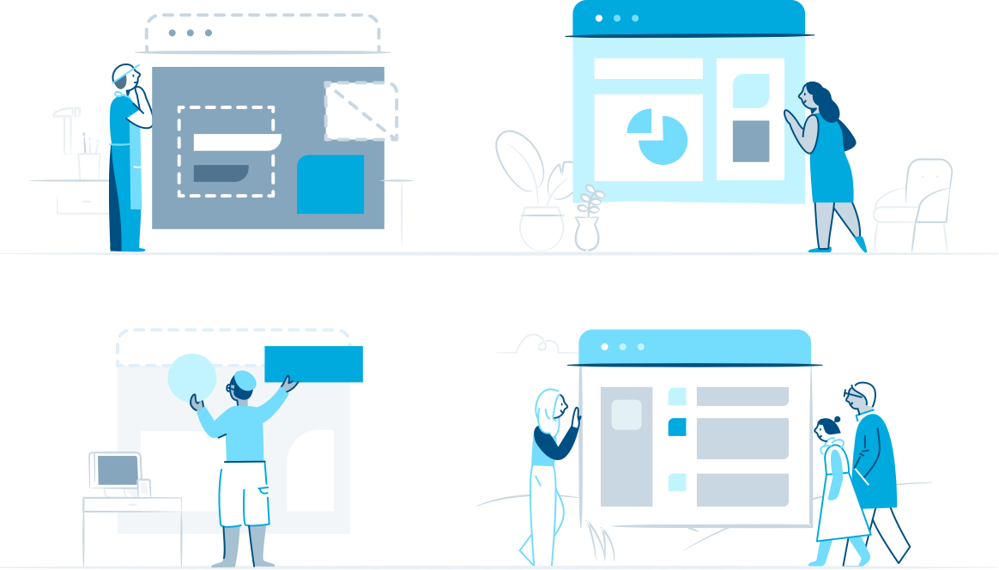
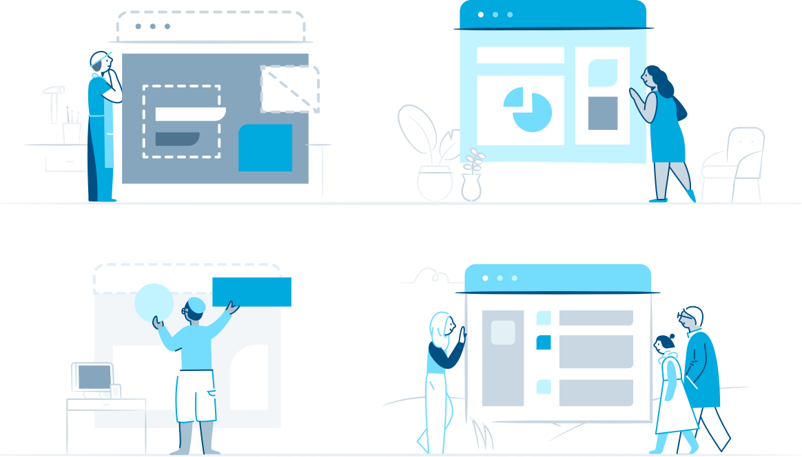

Inclusion matters
Wordpress: building an illustrative brand
Quick scenario: You're on your phone, going through the onboarding flow for a new app you just downloaded. Helpful illustrations appear to guide and educate you through the process. Now hold up: the characters in these illustrations, are they diverse or mainly white? Do they seem to be young tech-oriented millennials, mostly men?
I'd like to talk about this!
Context
One of my first forays into design and programming was in developing my own WordPress blog back in high school. Because it was something my friends and I did together for fun, I never thought twice about feeling out of place or asking silly questions - and now, I strongly associate WordPress (as well Xanga and Neopets) as a fun sandbox in which to learn and create new things.
Fast-forward through college, countless hackathons, and time in the industry, and I can very clearly see how many aspects of tech culture are alienating and discouraging to beginners, people of color, and anyone else who doesn't fall into the "young white millennial male" hacker stereotype. In particular, it's so important to foster an inclusive culture for younger programmers and designers who are just starting out and exploring!

One important way we can do this is by using marketing and product imagery that is more representative and inclusive. For example, as an illustrator, I often notice that tech illustrations often feature the same sets of things: young, non-POC people (usually men), surrounded with computer and techy gadgets, a coffee cup or two, all in a tech workspace. For consumer-oriented products, this creates an incredibily limiting brand image.
So when I teamed up with WordPress to create their illustration brand and design 50+ illustrations for their product, this was a major focus of ours. The team truly cares about inclusivity and we pushed each other to think about how we could challenge the status quo standard around these illustrations, given that WordPress powers 25% of sites on the web. 1
Starting blocks
A key design focus was on making sure our illustrations were representative and inclusive. This ranged from small, simple measures building a range of skin tones into the palette (not just a default white or pink), to larger design challenges such as creating scene backgrounds that represented many different types of lifestyles and cultures.

We started off with some basic character explorations, that were mainly style-focused. Then John Maeda asked, "Two minor Qs: How will we represent more diversity of skin tone / hair types with this kind of character? And how will we represent more diversity in body type (plus-sizes)?"


We thought deeply about
 

Diogenes Brito's thoughts behind using a brown hand in Slack's "Add to Slack" button hit the nail on the head - it seems simple, but it goes a long way (Just a Brown Hand).
“A line is a dot that went for a walk”
The team wanted

Credits
Design: Cece Yu, Aly Weir, Jackie Ho
Art Direction: Aly Weir, Kate Aronowitz
Special thanks: Josh Puckett, Sunnie Sang